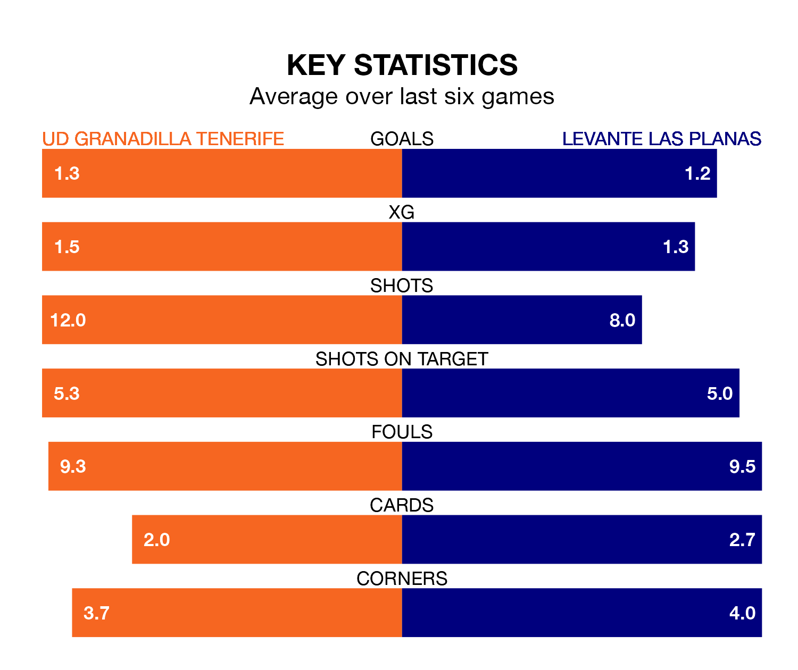

UD Granadilla Tenerife are heavy favourites to keep all three points at home in Sunday lunchtime's kick-off against Levante Las Planas.
Granadilla Tenerife, who sit ninth in Primera Division Women with 15 games played, are priced at 1.2 to seal victory at the Estadio La Palmera.
Sitting one place and two points behind them in the table, Levante Las Planas are 7.8 to win with *Betting Company*, while the draw is at 5.2.
Granadilla Tenerife are in mixed form in Primera Division Women, with one win and four draws from their last six games.
With no wins and two draws over that period, Levante Las Planas's form is worse – they have taken two points from 18, compared to the hosts' seven.
With 19 goals in 15 games so far this season, Granadilla Tenerife are scoring at below the league average rate with 1.3 goals per game. But they are conceding fewer than average too, letting in 23 goals at a rate of 1.5 per game.
The away team are also below average scorers, with 1.3 goals per game, compared to a league average of 1.6. They have conceded 1.9 goals per game.
In Aline Villares Reis, Granadilla Tenerife can rely on one of the league's safest pair of hands. She has kept four clean sheets in her 15 appearances this season in Primera Division Women.
In Levante Las Planas's net, Nayluisa Jhaylenny Cáceres Acevedo has one clean sheet in 15 games. She has conceded a goal every 52 minutes, 20% more often than the 61 minutes between goals for Villares Reis.
In the last three years, Granadilla Tenerife and Levante Las Planas have played each other on three occasions. Granadilla Tenerife won one of them and Levante Las Planas the other.
Their last meeting was on November 12, when Levante Las Planas won 3-1 at home.
Granadilla Tenerife's last match was on January 27, a 1-1 draw against Valencia Women, with Raquel Peña Rodríguez getting the goal for Granadilla Tenerife.
Levante Las Planas drew 1-1 with Atletico Madrid Women last time out, also on January 27, with Anissa Lahmari on the scoresheet.
Updated: 14:12 (UTC), 02/02/24